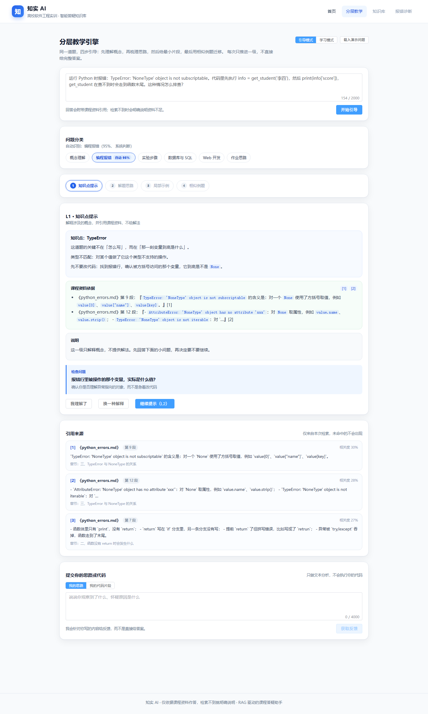
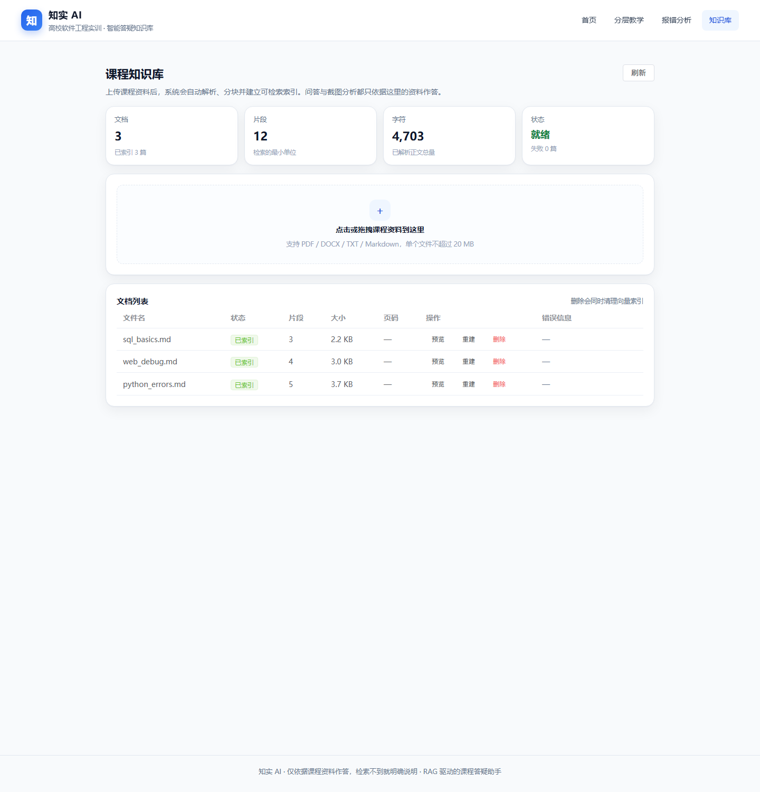
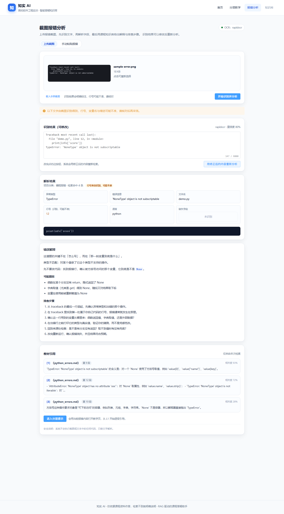

2026 第九届传智杯 · AI WEB 网页开发挑战赛（团队赛） 参赛编号 2107793 ｜ 广东工商职业技术大学 · 计算机学院 队员：卢文浩（2024120322103）、时森林（2024120322101）、张峻炜（2024120322102） 指导老师：梁少萍 ｜ 联系方式：2833029991@qq.com
学生在 Python、Web、数据库与软件工程实训中卡住时，最常见的做法是把代码或报错截图直接丢给通用 AI，然后复制答案。结果是作业完成了、知识没学会，而通用 AI 还会编造并不存在的 API、参数与错误原因。对教学场景而言，"给答案"不是帮助，反而替代了学生最需要经历的诊断过程。
与此同时，课程资料（实训讲义、实验指导书、常见错误整理）本身是可核查的依据，但学生往往不会去翻，或者翻到了也不知道哪一段对应自己的问题。
知实 AI 是一个面向高校软件工程实训的 RAG 智能答疑知识库：只依据已导入的课程资料作答，每条结论都附可点开的引用；资料里没有的，明确说"资料不足"，不编造、不猜测。
作品形态是 Web 应用：Vue 3 + Vite + TypeScript 前端，FastAPI 后端仅承担 AI 能力接入与业务编排。当前有四个页面：首页（系统状态）、分层教学、截图报错分析、知识库管理。

图 1 分层教学页面：L1 知识点提示与可核对引用
| 模块 | 状态 | 说明 |
|---|---|---|
| 前后端骨架、配置、CORS、健康检查 | 已完成 | FastAPI + Vue 3 |
| 课程知识库 | 已完成 | PDF/DOCX/TXT/MD 上传、解析、分块、Chroma 索引、删除同步清向量、分块预览 |
| 混合检索 | 已完成 | Chroma 向量 + 字面覆盖率加权，不足时回落内置示例词面检索 |
| 分层教学引擎 | 已完成 | 六类分类、四级提示、安全护栏、提交反馈、L3 提交门槛 |
| 通用知识层与证据覆盖度 | 已完成 | 资料只沾边不误判为有据；13 类常见报错给标注清楚的通用诊断 |
| 大模型接入 | 已完成 | OpenAI 兼容调用，L1–L3 润色，失败回退，DEMO_MODE 强制切换 |
| 截图报错分析 | 已完成 | 四通道 OCR、识别可编辑、复用检索与教学引擎 |
| RAG 独立聊天页 | 待开发 | 当前问答通过教学页与报错分析页提供 |
| 编号 | 需求 | 说明 |
|---|---|---|
| F1 | 课程知识库 | 支持 PDF / DOCX / TXT / Markdown，单文件 ≤20 MB / ≤300 页；按 sha256 去重；解析失败如实上报 |
| F2 | 文档索引 | 分块 → 离线向量 → Chroma 持久化；删除同步清向量；可重建索引、预览分块 |
| F3 | 混合检索 | 知识库优先，分数不足时回落内置示例资料；统一返回结构 |
| F4 | 问题分类 | 六类：概念理解、编程报错、实验步骤、数据库与 SQL、Web 开发、作业思路；可人工覆盖 |
| F5 | 分层提示 | L1 知识点提示 / L2 解题思路 / L3 局部示例 / L4 相似例题；每次最多推进一级 |
| F6 | 引导门槛 | 引导模式下进入 L3 前必须提交自己的思路或代码片段 |
| F7 | 引用与核对 | 每条结论带文档名与位置；模型输出中的越界引用编号被剔除 |
| F8 | 无据处理 | 覆盖度不足时说明资料不足；常见报错可给标注清楚的通用诊断 |
| F9 | 截图报错分析 | 上传截图 → OCR → 文本清洗 → 可编辑 → 复用检索与教学引擎 |
| F10 | 状态可解释 | 页面展示模型生成 / 模板生成 / 回退状态、资料覆盖度徽章、当前层级进度 |
| F11 | 演示模式 | 无 Key 自动进入；DEMO_MODE=on 可强制开启，用于现场故障回退 |
exec / eval / subprocess 调用）；前端 DOMPurify 清洗；密钥只在后端读取，/api/health 只回布尔值。storage/，提供 seed_demo.py 与一键脚本，5 步 ≤10 分钟。.env，绝不触发外部 API。明确不做：代写作业、输出可直接提交的完整实现、登录与多租户、流式输出（当前结构化块返回）、独立聊天页、Agent 工具调用、语义 Embedding（当前离线哈希向量）。这些不是遗漏，而是为了保证"教学优先、零配置复现、链路可控"的取舍；详见第 7 章。
浏览器（Vue 3 + Vite + TypeScript）
│ HTTP / JSON，Vite 代理 /api
▼
FastAPI 应用（app/main.py）
├── /api/health 健康检查与运行模式
├── /api/teaching/* 分类、四级提示、提交反馈、演示用例
├── /api/library/* 上传、列表、重建、分块预览
└── /api/errors/* OCR 能力、示例图、文本/图片分析
▼
领域模块
core（配置） library（入库索引） retrieval（混合检索）
knowledge（通用知识） teaching（引擎/护栏） errors（OCR/解析）
llm（模型客户端与提示词） models / api（协议）
▼
Chroma（storage/chroma，集合 library_chunks_v1） + 本地文件系统（storage/library）
| 模块 | 职责 |
|---|---|
app/core/config.py |
pydantic-settings 统一配置；llm_configured / demo_mode / embed_provider 判定 |
app/library/ |
文档解析、分块、哈希向量、Chroma 索引、登记表、去重与删除 |
app/retrieval/ |
CompositeRetriever：知识库检索优先，内置示例词面检索兜底 |
app/knowledge/general.py |
13 类常见 Python 报错的通用诊断与覆盖标记 |
app/teaching/ |
分类、四级提示模板、证据构建、安全护栏、反馈、引擎编排 |
app/errors/ |
图片校验、四通道 OCR、字段解析、截图分析编排 |
app/llm/ |
OpenAI 兼容客户端（重试、超时、回退）与提示词模板 |
app/api/ |
HTTP 协议转换与请求补齐，不承载业务逻辑 |
CompositeRetriever.search() 先调用 LibraryIndex.search()：把查询与分块都映射成 512 维哈希向量，计算余弦相似度，再叠加字面覆盖率，按 0.75 × 余弦 + 0.25 × 字面 得到最终分数。若返回数量不足 top_k，用 KeywordRetriever 从内置示例资料按 IDF 加权词面匹配补齐。两条路径返回同一个 RetrievedChunk 结构，上层引擎无需感知差异。
检索结果进入 build_citations()：低于 min_evidence_score（默认 0.15）的片段被剔除，留下的片段按文档名 + 位置生成可核对引用。
问题 → 分类（六类，置信度）→ 按分类检索（top_k=4）
→ 构建引用（分数过滤）→ 证据覆盖度判定
→ 生成分层提示（L1–L4，受跳级与 L3 提交门槛约束）
→ 安全护栏（代码块 ≤6 行、完整实现检测、泄露短语收敛、引用编号清洗）
→ 若已配置模型且层级为 L1–L3：只把被引用片段交给模型润色，失败回退模板
→ 响应（blocks / citations / check_question / llm_status / safety / insufficient_evidence）
本地开发为两个独立进程：后端 uvicorn :8000，前端 Vite :5173，Vite 把 /api 代理到后端，避免跨域配置。生产可 npm run build 后用静态服务器托管 frontend/dist，后端单独部署；仓库另提供 scripts/dev.ps1 一键起双服务。本次独立验证使用 :8001 / :5174 端口，与另一工作副本隔离。
| 选型 | 理由 |
|---|---|
| OpenAI 兼容协议 | 用 LLM_BASE_URL 可替换供应商，不被单一厂商锁定；客户端只需实现一次 |
| pydantic-settings | 环境变量 + .env 双通道，类型校验完善；满足"密钥不进仓库"的官方要求 |
| Chroma | 纯 Python、本地持久化、无需独立服务；适合单机演示与评测 |
| 离线哈希向量 | 字符 n-gram 哈希映射，不需要 GPU、不需要外网、不需要 Key；评委零配置也能跑完整检索 |
| rapidocr-onnxruntime | 本地 OCR，截图分析在离线环境也可用；视觉模型作为可选增强通道 |
| 不引入 LangChain | RAG 链路短且需要精确控制（引用过滤、层级约束、护栏），自建链路代码更少、行为可预测、便于写测试 |
backend/app/library/embeddings.py 定义 EMBED_VERSION = "hash-char-ngram-v1"、EMBED_DIM = 512。embed_text() 把文本切成字符 n-gram，用 zlib.crc32 把每个特征映射到 512 个槽位并累加，得到稀疏但稳定的向量；同一段文本永远得到同一向量，无需模型下载。
分块参数：目标 500 字符、重叠 80 字符、单块上限 800 字符（chunker.py）。重叠从句子边界开始计算，避免引用卡片以半句话开头——这是人工核对引用时发现并修复的问题（提交 dbdba11）。
index.py 中 VECTOR_WEIGHT = 0.75、LEXICAL_WEIGHT = 0.25，最终分数为二者加权；既保留主题相似性，又不放过关键词精确匹配。集合名 library_chunks_v1，命名带版本号，便于将来索引结构升级时平滑迁移。
口径说明：
/api/health回显embed_dim: 1024是config.py中为将来接远程语义 Embedding 预留的默认值；当前实现的真实维度是EMBED_DIM = 512。配置是可调参数，实现是当前取值，二者不矛盾。
app/llm/client.py 用 OpenAI 兼容的 Chat Completions 协议，带超时、重试与异常上抛；stream: False，因为当前回答是有结构的块（讲解 / 步骤 / 例题 / 检查问题），不适合逐 token 渲染。sanitize_citations() 清洗，越界编号会被剔除并标记。这同时降低 token 消耗与"编造引用"风险（提交 f844a91，8 个相关测试）。llm_status 从 model 变为 fallback；未配置模型时为 template。前端同步显示来源，不把模板伪装成 AI 生成。DEMO_MODE 支持 auto（按是否配置模型自动判断）/ on（强制演示）/ off（强制非演示）。现场 API 故障时设 on 重启即可，检索与引用完全不受影响。/api/health 返回 demo_mode: false / llm_configured: true；一次真实 L1 请求 HTTP 200、4.62 秒、llm_status: "model"（见 docs/assets/health-check-evidence.md）。提示词模板（app/llm/prompts.py）明确要求：只依据给定资料作答、不得输出可直接提交的完整实现、按层级输出指定结构、引用只能使用资料中真实存在的编号、语气为引导而非代写。测试 test_prompt_contains_sources_and_rules 与 test_prompt_does_not_leak_api_key 分别锁定"规则存在"与"提示词不含密钥"。
课程资料永远覆盖不全。若只要关键词"沾边"就算有据，会出现"资料里提了一句、模型就编出一大段"的问题。系统因此做了两层判断：
concatenate str、not subscriptable、division by zero 等）。只有命中标记才算资料真的讲到这类问题；否则 insufficient_evidence = true。app/knowledge/general.py）：覆盖 13 类常见 Python 报错（类型不匹配、字符串拼接、None 下标、不可调用、不可迭代、缺少属性、索引越界、int 字面量、缩进、参数个数、除零、模块缺失、名称未定义、KeyError 等），给出症状解释、可能原因与排查步骤，并在界面明确标注「通用 Python 知识（非课程资料）」。这样既不误报"资料有据"，也不会面对常见错误只会说"我不知道"。相关行为由 6 个测试固定。
| 优化 | 做法 | 收益 |
|---|---|---|
| 混合加权 | 0.75 向量 + 0.25 字面 | 兼顾主题相似与关键词精确匹配 |
| 句子边界分块重叠 | 重叠从完整句子起算 | 引用卡片不出现半句开头 |
| sha256 去重 | 同内容重复上传不重复索引 | 避免索引膨胀与重复引用 |
| 删除同步清向量 | 删文档同时删 Chroma 对应块 | 不会"删了还能检索到" |
| 只传被引用片段 | 模型上下文最小化 | 降低 token 与幻觉，引用可核对 |
| 失败降级 | 模型异常自动回退模板 | 单点故障不中断演示 |
| 来源分离标注 | model / template / fallback |
评委能分辨哪些是真实 AI 生成 |
| 检索兜底 | 知识库不足时回落内置示例 | 空知识库也有可演示内容 |
exec / eval / subprocess；提交反馈只给方向性提示，不判断代码是否正确，这是安全的代价。v-html 引入 XSS。.env 读取；/api/health 只返回 llm_configured 布尔值，不回显任何密钥内容。guard_blocks()：L3 代码块有效行数 ≤6、检测完整实现并收敛泄露短语、清洗越界引用编号；触发时响应 safety 字段留痕。test_model_citations_are_pruned_to_real_sources 与 test_model_receives_only_cited_chunks 把"不编造引用"固化为回归保护。
图 2 课程知识库：文档列表、索引状态与分块预览
支持 PDF / DOCX / TXT / Markdown，单文件上限 20 MB / 300 页（config.py 的 upload_max_mb / upload_max_pages / upload_allowed_ext）。上传走真实链路：读文件 → 按类型解析（PDF 用 PyMuPDF 保留页码，DOCX 用 python-docx 保留标题层级）→ 分块 → 哈希向量化 → upsert 到 Chroma → 写登记表。按内容 sha256 去重；扫描版 PDF 无文本层时列表标记失败并说明原因。删除文档同步删向量；提供重建索引与分块预览。首页与健康检查的文档数 / 片段数来自真实登记表。
六类：concept（概念理解）、error（编程报错）、experiment（实验步骤）、sql（数据库与 SQL）、web（Web 开发）、assignment（作业思路）。分类器结合关键词与检索文本打分，返回类别、置信度与候选列表，用户可手动覆盖。
四级提示：L1 知识点提示、L2 解题思路、L3 局部示例、L4 相似例题。每次请求最多推进一级：requested_level=4、current_level=0 会被压回 L1，并给出 clamp_reason = max_one_level_per_step。引导模式下进入 L3 还需先提交尝试，否则 clamp_reason = guided_requires_attempt，前端弹出明确提示。L1/L2 禁止输出代码，L3 代码块 ≤6 行，L4 必带 AI 生成标记——这些约束都有测试覆盖。
每条提示附 citations：doc_name、location、heading、snippet、score。界面可折叠展开核对。每次响应还带一个 check_question，引导学生先自己验证理解，再决定是否解锁下一层。
四通道 OCR：auto（有视觉模型用视觉模型，否则本地 rapidocr）、vision（强制视觉模型）、rapidocr（强制本地）、none（仅手动粘贴）。图片先做格式与尺寸校验，OCR 后做后处理并按字段解析；识别文本可在页面编辑后重新分析，避免误识别污染检索。分析复用同一套检索与教学引擎，因此同样受引用与护栏约束。

图 3 截图报错分析：上传识别、文本可编辑与复用检索
四个页面：首页展示系统状态与知识库统计；教学页提供分类选择、层级阶梯、引用折叠、左侧竖向进度栏、模型状态标注、提交弹窗；报错分析页支持上传预览、识别编辑与手动粘贴；知识库页支持上传、删除、重建与分块预览。所有动态文本经 DOMPurify 清洗。
后端 15 个测试文件、共 124 个用例，实测全部通过（124 passed in 3.78s）。覆盖范围：配置与演示模式、知识库上传 / 去重 / 删除 / 重建 / 失败状态、分块、混合检索、关键词兜底、六类分类、四级提示格式、跳级与 L3 门槛、通用知识层与覆盖度、安全护栏、LLM 提示词与客户端容错、截图图片校验、OCR 后处理、接口协议。
强制演示模式的测试明确不读本机 .env，保证 CI 或评委机器上跑测试绝不会真的调用外部 API、也绝不会因缺 Key 而失败。这是"测试可复现"的关键。
scripts/check_demo.py 按 backend/data/demo_cases.json 的 6 个标准问题核对检索、分类与回答，实测 6/6 PASS。前端 npm run build 包含 vue-tsc 类型检查，实测通过；有主包 1.11 MB 超过 500 KB 的告警，属优化建议而非错误。
仓库不含 storage/，clone 后按 README「一键复现」5 步执行：
python -m venv .venv
.\.venv\Scripts\python.exe -m pip install -r backend\requirements.txt
Copy-Item .env.example .env
.\.venv\Scripts\python.exe scripts\seed_demo.py
.\.venv\Scripts\python.exe scripts\check_demo.py
.\scripts\dev.ps1
完成后首页应显示 4 篇文档 / 15 个片段，服务端口 8000 / 5173。
模型 API 超时或欠费：.env 设 DEMO_MODE=on 并重启后端，回答来源变为 template，检索、引用、分级逻辑全部不变。前端会显示演示模式横幅，不会把模板回答伪装成模型输出。
2026-11-16 独立验证：后端 :8001 启动日志 demo_mode=False；GET /api/health 返回 demo_mode:false / llm_configured:true / 知识库 4 篇 15 片段；POST /api/teaching/hint HTTP 200 / 4.62 秒 / llm_status:"model"；前端 :5174 HTTP 200、npm run build 通过。详见 docs/assets/health-check-evidence.md。
接入语义 Embedding 并在 embed_dim 配置上平滑切换；增加 SSE 流式渲染与独立聊天页，补全 RAG 主界面闭环；引入工具调用让引擎按问题类型自主选择检索策略；建设评测指标看板，把 Recall@5、引用覆盖率、泄露率做成可量化趋势；扩展多帧报错诊断与批量截图。
| 方法 | 路径 | 说明 |
|---|---|---|
| GET | /api/health |
健康检查、运行模式、知识库统计 |
| GET | /api/teaching/categories / levels / modes |
六类、四级、两种模式定义 |
| POST | /api/teaching/classify |
问题分类，置信度与候选 |
| POST | /api/teaching/hint |
获取某一层提示（核心接口） |
| POST | /api/teaching/feedback |
对学生提交给出方向性反馈 |
| GET | /api/teaching/demo-case |
演示问题与真实检索结果 |
| GET | /api/library/stats / documents |
知识库统计与文档列表 |
| POST | /api/library/documents |
上传并解析文档 |
| POST | /api/library/documents/{id}/reindex |
重建索引 |
| GET | /api/library/documents/{id}/chunks |
分块预览 |
| GET | /api/errors/capabilities / sample-image |
OCR 能力、演示截图 |
| POST | /api/errors/analyze-text / analyze-image |
文本 / 截图报错分析 |
| 变量 | 作用 |
|---|---|
DEMO_MODE |
auto / on / off，演示模式开关 |
LLM_BASE_URL / LLM_API_KEY / LLM_MODEL |
模型接入三要素，齐全才 llm_configured: true |
EMBED_PROVIDER / EMBED_API_KEY / EMBED_MODEL |
远程向量模型；留空走本地哈希向量 |
OCR_PROVIDER / VLM_* |
OCR 通道与视觉模型配置 |
RETRIEVAL_MIN_SCORE |
引用过滤阈值，默认 0.15 |
UPLOAD_MAX_MB / UPLOAD_MAX_PAGES |
上传限制，默认 20 MB / 300 页 |
# 后端测试
cd backend && ../.venv/Scripts/python.exe -m pytest -q
# 演示自检
../.venv/Scripts/python.exe scripts/check_demo.py
# 前端构建
cd frontend && npm run build
# 安全检查（应无输出）
git grep -n -E "sk-[A-Za-z0-9]{16,}" -- .
git ls-files | grep -E "^\.env$"